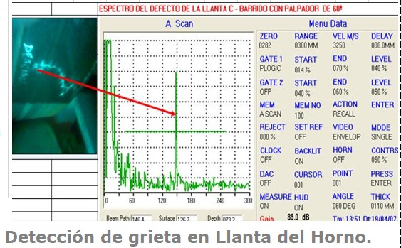
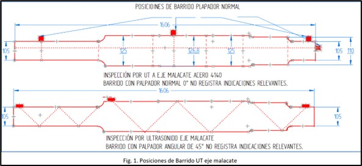

La medición de espesores por ultrasonido es una técnica no destructiva que permite determinar el espesor actual o remanente de materiales metálicos, sin necesidad de cortar o dañar la pieza. Con base en esta medición, y considerando las dimensiones del equipo y la presión de trabajo, es posible calcular el espesor mínimo requerido para mantener la integridad estructural del componente. Este análisis permite establecer si el equipo es apto para continuar en servicio, si requiere reparación, o si debe ser retirado de operación por motivos de seguridad.

Medición de espesores en componente metálico con equipo portátil.

Evaluación de pérdida de espesor por corrosión.

Determinación del espesor remanente en superficies metálicas.
La técnica de ultrasonido para inspección de soldaduras, también conocida como ultrasonido por defectología, se utiliza para detectar y evaluar discontinuidades internas como grietas, porosidades, inclusiones, falta de fusión, entre otros defectos. Esta evaluación es esencial en uniones soldadas de componentes críticos, ya que garantiza la calidad de la unión y la confiabilidad en servicio.

Evaluación de soldadura mediante ultrasonido convencional.

Detección de defectos internos en soldaduras estructurales.

Inspección de uniones soldadas en campo con equipos portátiles.

Evaluación interna sin desmontar la pieza.

Identificación de discontinuidades en soldaduras de difícil acceso.
Ofrecemos además el servicio especializado de Scan B por ultrasonido, el cual proporciona una representación gráfica del perfil interno del material inspeccionado. Esta técnica permite una visualización más detallada de la estructura interna de piezas metálicas, facilitando la identificación precisa de defectos y el análisis de su geometría, ubicación y severidad. Es ideal para complementar inspecciones más complejas y obtener un registro visual del estado interno de los componentes.
Todo el personal que realiza las inspecciones está debidamente certificado, cumpliendo con los estándares internacionales de calidad y confiabilidad.